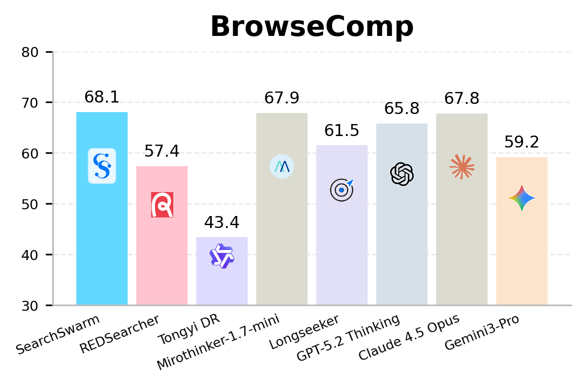
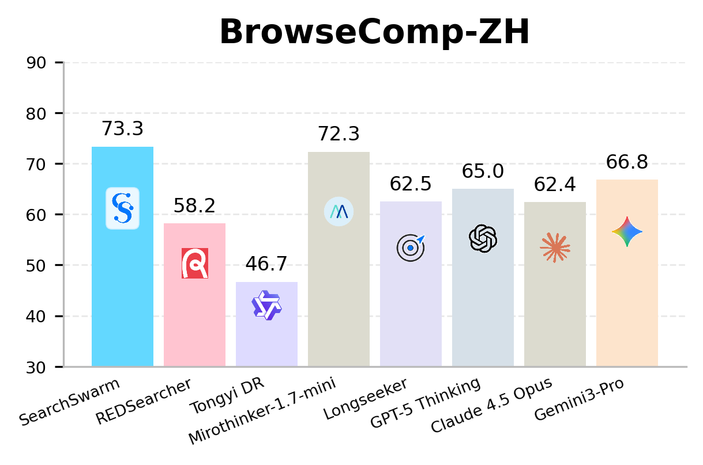
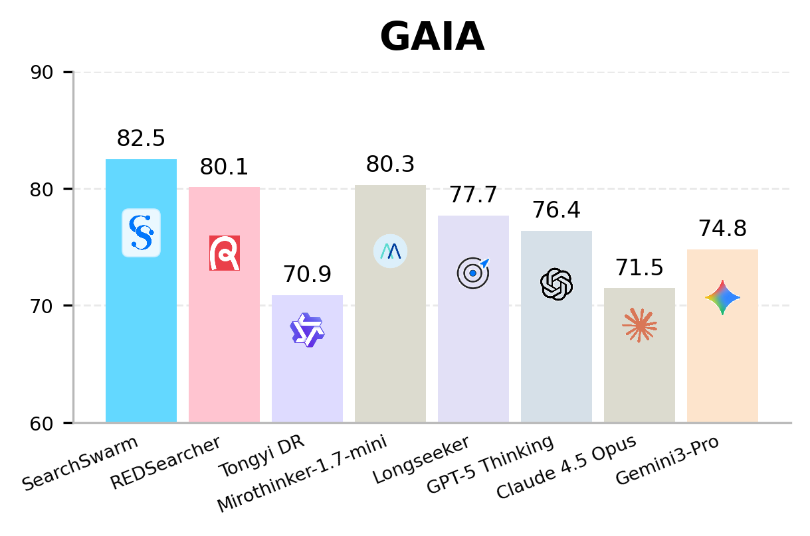
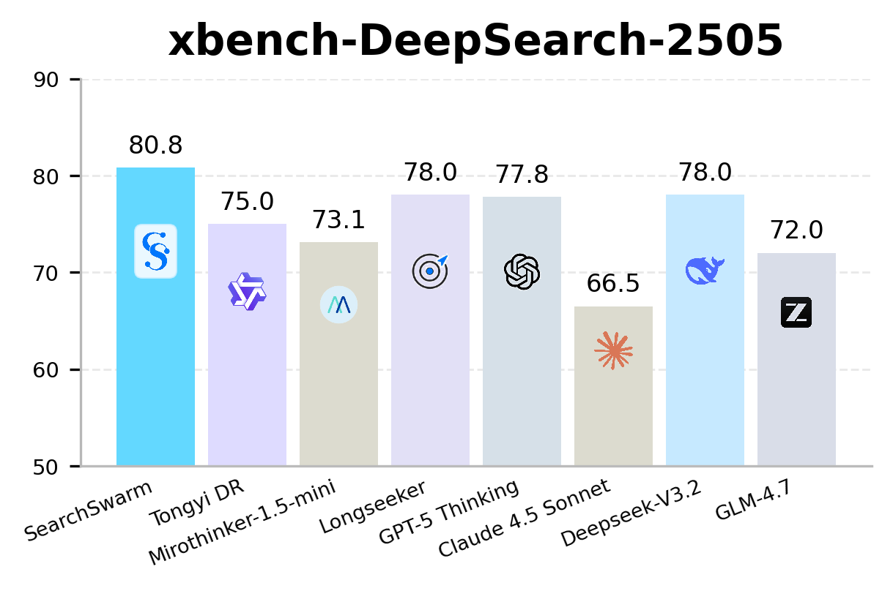
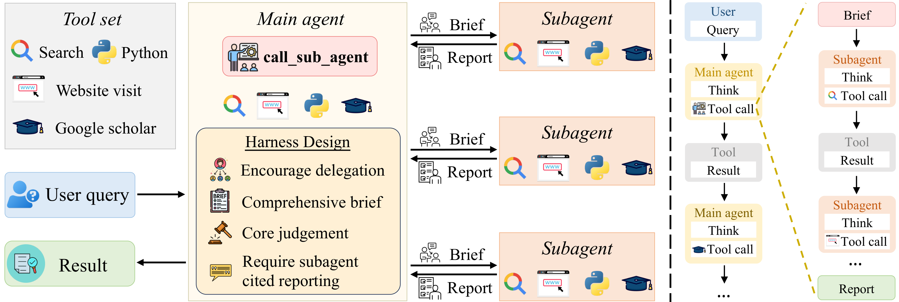

Towards Delegation Intelligence in Agentic LLMs for Long-Horizon Deep Research
Real tasks can grow almost unbounded, yet a model's context is finite. We teach agentic LLMs delegation intelligence: to decompose a long-horizon task, delegate bounded subtasks to its own subagents, and integrate their condensed, evidence-grounded results, an active form of context management that lets a single model take on far more than its context alone allows.
Delegation as active context management
A single model delegates bounded subtasks to subagents in separate contexts, which return only condensed results, keeping the main context clear.
High-quality delegation SFT data
We synthesize and release fine-tuning trajectories that teach when to delegate, how to brief a subagent, and how to verify what comes back.
30B-A3B SOTA
SearchSwarm leads every model at its scale on BrowseComp, BrowseComp-ZH, GAIA, and xbench-DeepSearch across all four benchmarks.
Benchmark Comparisons
SearchSwarm is the state-of-the-art model at the 30B scale, across all four benchmarks.




Trajectories in Action
Real runs: watch the main agent decompose a question, delegate to subagents, and synthesize a cited final answer.
Short-Answer Deep Research
Eight cases that require multi-hop evidence gathering before returning a concise, source-grounded answer.
Open-Ended Deep Research
Three long-form synthesis cases with source-grounded reports.
SearchSwarm Framework
The main agent owns the research mainline: it decomposes the question, delegates bounded evidence-gathering to subagents, and integrates the condensed, source-grounded reports they return.

SearchSwarm at a glance. The main agent dispatches bounded subtasks to subagents that run in their own fresh contexts and return condensed, cited reports, which re-enter the main agent's context for verification and synthesis.
Performance Table
Baseline numbers are taken from the respective technical reports or model cards; an asterisk (*) marks results that use context management.
| Model | Size | BrowseComp | BrowseComp-ZH | GAIA | xbench-DeepSearch-2505 |
|---|---|---|---|---|---|
| Closed-source models | |||||
| GPT-5.2-Thinking | -- | 65.8 | 76.1 | -- | -- |
| GPT-5 | -- | 54.9 | 65.0 | 76.4 | 77.8 |
| Claude-4.5-Opus | -- | 67.8 | 62.4 | 71.5 | -- |
| Claude-4.5-Sonnet | -- | 24.1 | 42.4 | 66.0 | 66.5 |
| Gemini-3.0-Pro | -- | 59.2 | 66.8 | 74.8 | -- |
| Seed-2.0-Pro | -- | 77.3* | 82.4* | 78.6 | -- |
| Open-source models | |||||
| Kimi-K2.5 | 1T-A32B | 78.4* | -- | -- | -- |
| GLM-4.7 | 355B-A32B | 67.5* | 66.6* | -- | 72.0 |
| GLM-5.0 | 744B-A40B | 75.9* | 72.7* | -- | -- |
| DeepSeek V3.2 | 671B-A37B | 67.6* | 65.0* | 75.1 | 78.0 |
| LongCat-Flash-Thinking-2601 | 560B-A27B | 73.1* | 77.7* | -- | -- |
| MiniMax-M2 | 230B-A10B | 44.0 | -- | 75.7 | 72.0 |
| MiniMax-M2.5 | 230B-A10B | 76.3* | -- | -- | -- |
| Step-3.5-Flash | 196B-A11B | 69.0* | 66.9 | 84.5 | 83.7 |
| Open-source lightweight models | |||||
| Tongyi DeepResearch | 30B-A3B | 43.4 | 46.7 | 70.9 | 75.0 |
| Tongyi DR Swarm | 30B-A3B | ≈43.4 | ≈46.7 | ≈70.9 | ≈75.0 |
| RedSearcher | 30B-A3B | 57.4* | 58.2* | 80.1 | -- |
| LongSeeker | 30B-A3B | 61.5* | 62.5* | 77.7* | 78.0* |
| MiroThinker-1.5-mini | 30B-A3B | 56.1* | 66.8* | 72.0* | 73.1* |
| MiroThinker-1.7-mini | 30B-A3B | 67.9* | 72.3* | 80.3* | -- |
| SearchSwarm (Ours) | 30B-A3B | 68.1* | 73.3* | 82.5* | 80.8* |
Open-Ended Deep Research
Trained only on short-answer queries, SearchSwarm still transfers to long-form, multi-source synthesis.
| Model | ScholarQA-v2 | HealthBench | ResearchQA | DeepResearchBench | Average |
|---|---|---|---|---|---|
| Closed-source systems | |||||
| OpenAI DeepResearch | 79.6 | 53.8 | 79.2 | 46.9 | 64.9 |
| Perplexity DeepResearch | 67.3 | -- | 75.3 | 42.3 | -- |
| Gemini-3.1-Pro + search | -- | 47.5 | 74.5 | 44.4 | -- |
| Open-source models | |||||
| Qwen3-8B | 40.4 | 16.5 | 56.1 | 33.3 | 36.6 |
| QwQ-32B | 41.9 | 24.5 | 60.9 | 40.3 | 41.9 |
| Tongyi DeepResearch | 46.5 | 46.2 | 66.7 | 40.6 | 50.0 |
| WebThinker-32B-DPO | 46.7 | 39.4 | 74.2 | 40.6 | 50.2 |
| Dr.Tulu | 88.3 | 52.8 | 75.7 | 45.4 | 65.6 |
| SearchSwarm (Ours) | 79.2 | 52.8 | 80.2 | 44.4 | 64.2 |